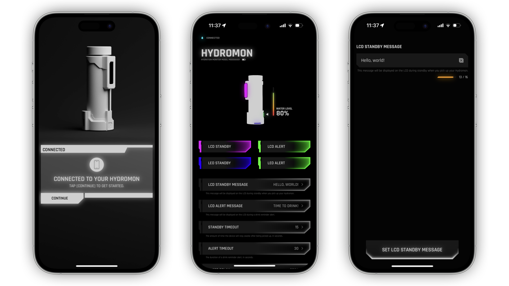
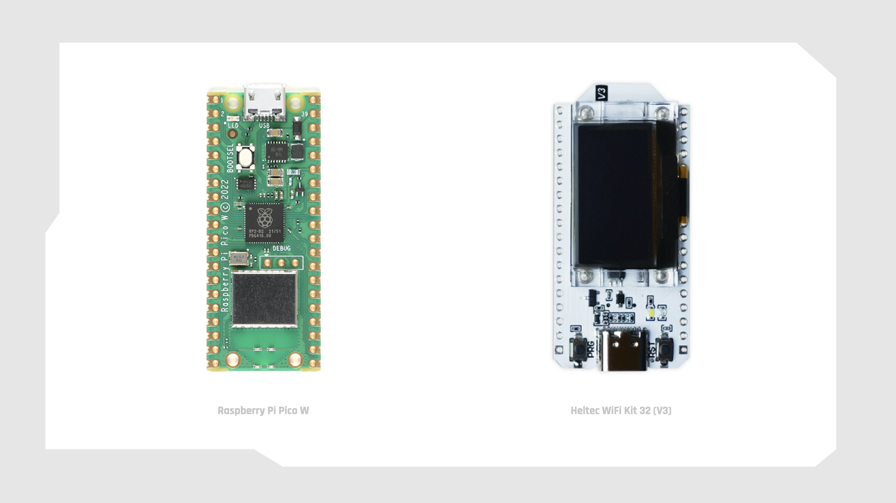
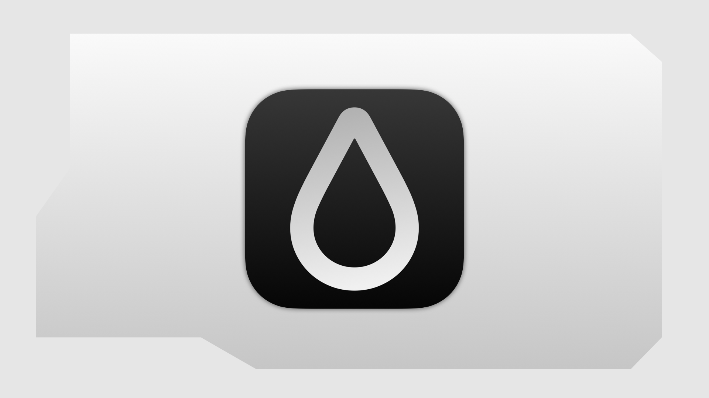
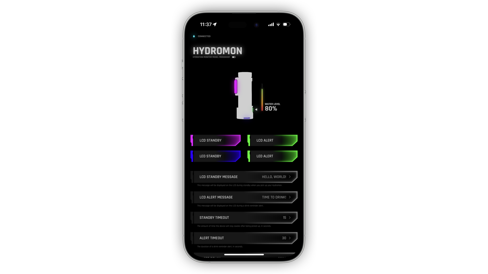
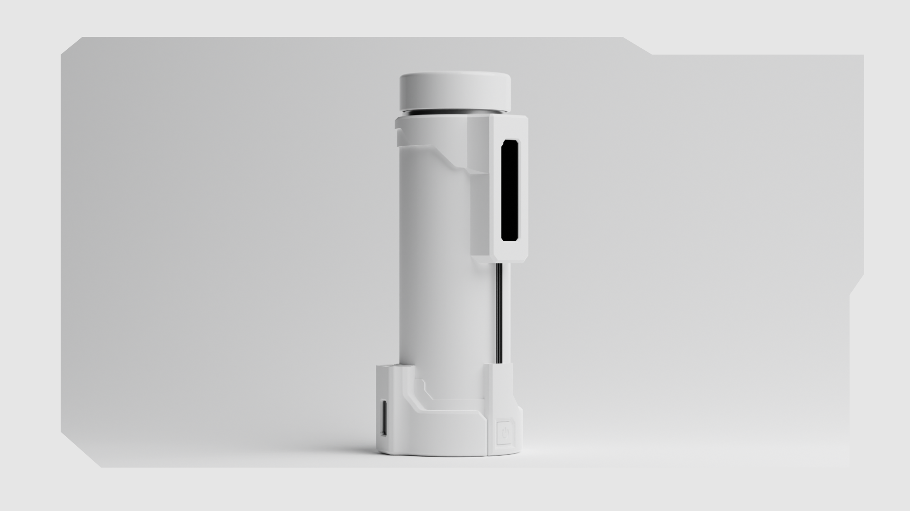
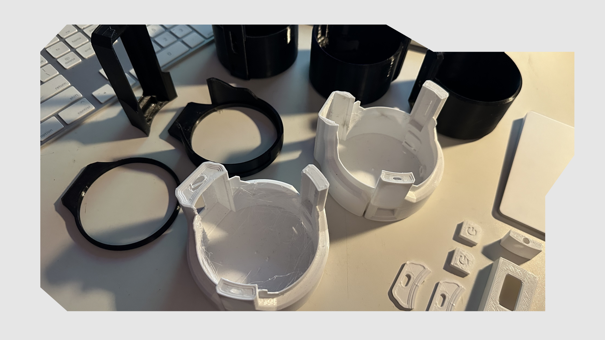

Hydromon is an intelligent hydration monitoring system inspired by the
futuristic world of Cyberpunk 2077. This innovative device does more
than just hold water – it actively monitors and guides your hydration habits.
Echoing the in-game 'biomon' or biological monitor, Hydromon intelligently tracks
your water consumption and gently nudges you to hydrate at regular intervals.
Paired with its dedicated iOS app, Hydromon gives you the power to fully customize
your experience. Whether it's the neon glow of the built-in RGB lighting or the
motivational messages on the LCD, every detail can be personalized to inspire and
engage you. Hydromon’s fusion of technology and wellness make hydration a habit
that's hard to forget.
Continue reading for a technical deep-dive into Hydromon’s deeply integrated
hardware and software systems.
Source code
Source code for both the
firmware
and the iOS app
is available on GitHub.
Components
ESP32-based dev board (Heltech WiFi kit 32 V3)
128x32 monochrome OLED
16x2 RGB-backlit character LCD
MPU6050 inertial measurement unit
RGB LED
Momentary push switch (hydration monitoring)
PMaintained push switch (power)
1000+ mAh 3.7V lithium ion battery
Software
Software development for this project encompasses work across the entire stack.
This section will explore the development of the Hydromon iOS app, device
firmware, and the journey that led to the system’s current design.

Beginning with communication over HTTP
Initially, the system was designed such that the iOS app would send/retrieve
data by making HTTP requests which were then handled by a server running on a
Raspberry Pi Pico W. The Pico would act as a WiFi access point, requiring the
user to connect to the "hydromon" network in order to interact with the device
via app. In order to conserve power, the user would be required to enable editing
(turning on the access point and then initializing the server) before connecting.
Though this did work, there were issues with the SSID being broadcast reliably,
not to mention that this was obviously not the best user experience. The reason
for initially pursuing this method of communication was due to the fact that
Hydromon was powered by a Pico W. The solution to this issue was clear: use Bluetooth
instead of WiFi. Bluetooth (Low Energy) is quite obviously the right choice for
communication with a device with strict power consumption and ease-of-use requirements.
Unfortunately, though the Pico W does have Bluetooth hardware, at the time of writing
there is no Micropython support for Bluetooth on the Pico W. As most of the Micropython
firmware was already written, the notion of rewriting it all in C++ just to get Bluetooth
felt unproductive. With this in mind, the project changed course in order to enable the
use of Bluetooth Low Energy (BLE) and Micropython.

Changing course
The Heltec Wifi Kit 32 V3 is an affordable ESP32-based development board with a built-in
monochrome OLED display, USB-C, integrated battery management hardware, and a host of other
awesome features. Being based on an ESP32, the board is incredibly easy to work with and
online resources are plentiful. Best of all, it already has Micropython support for BLE!
Porting the existing firmware was a relatively simple task. All that was required was
to swap or modify low-level hardware drivers and update GPIO pin numbers. Each component
was migrated one-by-one as the drivers were updated in tandem, ensuring the functionality
of each component before moving on to the next.
Of course, this was a drastic change in hardware and necessitated a redesign of the
electronics enclosure as well. More on that in the section on hardware.

The Hydromon iOS app
Hydromon’s companion app is critical to the user experience, enabling a user to tailor
preferences like sip size and messages displayed on the LCD in different situations. In
a later update, the app will also gain the ability to present notifications on the user’s
phone so that reminders are never missed, even when Hydromon isn’t visible. The app is
built with SwiftUI and leverages CoreBluetooth for communication with the Hydromon device.
Connecting to Hydromon
Upon first launch (or in the case that the user forgets Hydromon in Bluetooth Settings),
the user is presented with the view above. The app searches for a Bluetooth device in
close proximity with the device name “hydromon”. Once found, the user is prompted to
connect to this device and, upon connection, the animation shown above indicates success.

Interacting with Hydromon
The view most interacted with is ControlView. This is where the user’s preferences and
device settings can be modified. At the top of ControlView is the Status View, which
displays information like connection status and fill level while also providing a preview
of the built-in RGB lighting’s current settings.
Below the Status View are all of the individual controls. The controls are sorted by
estimated frequency of use, with RGB lighting controls at the top followed by preferences
for LCD Standby and Alert color / messages and finally additional settings like sip size,
delay between drink reminders, and OLED brightness.
ControlView uses an instance of BluetoothManager, an ObservableObject conforming to
CBCentralManagerDelegate and CBPeripheralDelegate, to get/set the values of BLE characteristics
provided by the Hydromon device. Hydromon acts as a Bluetooth peripheral, advertising the
Device Information Service and a custom Preferences service. The Preferences service contains
a characteristic for each of the user preferences and device settings available in the app.
BluetoothManager is also responsible for managing and communicating the status of the Bluetooth
connection with Hydromon.
Hydromon firmware
The Hydromon firmware running on-device contains modules that are each individually responsible
for a specific system feature. These modules come together in boot.py, which runs on boot
and contains the main function that concurrently manages Bluetooth connections with
BluetoothManager, monitors button input with InputManager, and runs an endless loop
responsible for the bulk of the device’s behavior.
The endless loop
The endless main loop keeps track of time so that drink reminder alerts can be delivered, monitors the
Inertial Measurement Unit (IMU) z-axis acceleration to determine when Hydromon is being picked up,
parses inputs registered by InputManager, and continually updates preferences / settings as they
change.
Identifying button input
InputManager is responsible for identifying and communicating button input. InputManager
has a reference to an AsyncButton object which triggers an interrupt request when the value
of the pin that the button is connected to changes. This interrupt request triggers a callback
function that registers the input as either a press or a hold. A single press decreases the
WaterMonitor’s estimated fill level by the user’s specified sip size. A hold (more than 1
second) resets the WaterMonitor’s estimated fill level to 100%.
Registered inputs are then added to a queue. When parseInputs is called, InputMonitor
loops through the queue and triggers the appropriate action (passed in as a parameter) based
on the input.
Preferences
User preferences and device settings are stored in a plain text JSON file in Hydromon’s
filesystem. PreferenceManager handles the storage and retrieval of preference values from
this JSON file.

Hardware
3D-printed parts
As discussed above, Hydromon’s final iteration was not its first design.
In fact, several prototypes and countless test prints were done before arriving
at the final design seen in the renders shown. All CAD work was done in Fusion 360,
the parts were sliced in Cura, and printed with PETG on a Voxelab Aquila.

Electronics
The electronics and wiring are fairly simple as each of the components is
directly connected to the GPIO pins of the ESP32 board.
Communication between components
Some components require a robust protocol to communicate efficiently and effectively
with the microprocessor. I2C communication is used to communicate with both of the
OLED displays, the LCD, and the IMU. Other components, like the LED and button,
communicate by simply pulling their pin high or low. I2CManager handles the I2C
components while the others each have their own specific drivers.
What's next?
Lots of testing is needed to dial in the device settings for a great user experience.
In the future these settings might be less prominent in the app once their default values
are acceptable. Also, with the release of the iOS 17 SDK, the iOS app may be modified to
leverage Swift Data and other new features to enhance the experience.